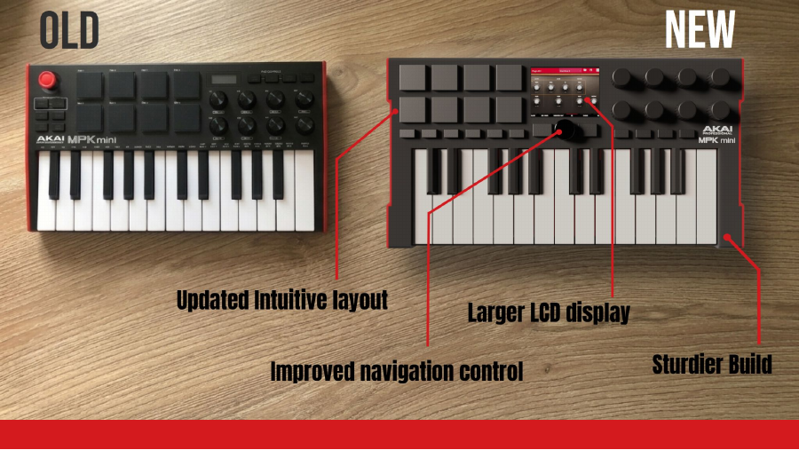
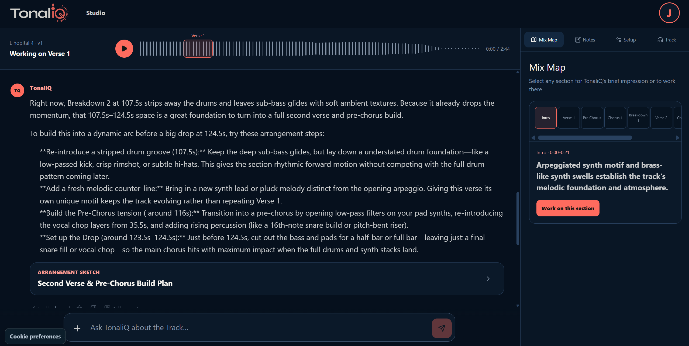
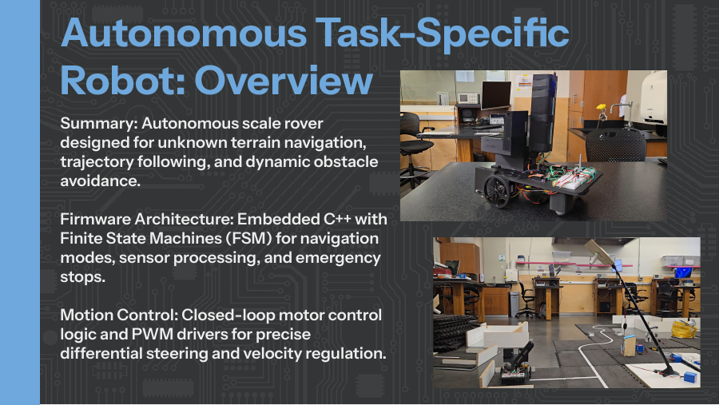

Hey, I’m Justin.
Engineer.
Designer.
Builder.
I bring creative concepts to life through mechanical design, smart hardware, and thoughtful software.



Selected Work
Other small
projects.
Data + StatisticsPunxatawny phil vs a coin toss.
Open
I cleaned historical weather and prediction data, then used a one-proportion test to see whether Groundhog Day folklore held up. It didn’t—but the process turned a ridiculous question into a careful statistical argument.
- Python data cleaning and analysis
- NOAA weather records
- Hypothesis testing and visualization
Biomedical Product DesignHeartRayt
Open
A concept for making cardiac imaging easier to position and repeat. The work moved from rough ideas to lab validation, clinician conversations, and an early look at the regulatory path.
- Need finding and concept development
- Physical testing and iteration
- Clinician feedback and constraints
Creative ComputingOne-Key Keyboard
Open
I treated four buttons and an Arduino as a design constraint, not a limitation. Software turned the tiny interface into a playable sound experiment.
- Arduino prototyping
- Input mapping and sound behavior
- Designed around minimal hardware
Local Product ToolsSynaptech Books
Open
A local-first bookkeeping tool I made to understand the money moving through several small product experiments without forcing them into a generic accounting workflow.
- Management-accounting views
- Product-level categorization
- Local data and practical reporting
About Me
I love making
things.
I’m a mechanical engineering student at BYU with a mathematics minor. I like designing products, working through the details, and building versions people can actually try.
I use CAD, electronics, code, and physical prototypes. Research helps me make better choices, but most of my learning happens while making and revising.